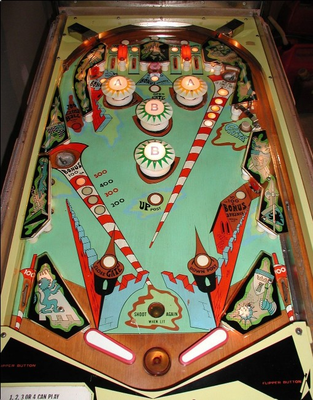

Camelot is the 4-player version. Galahad is a 2-player version with identical rules and scoring.
At the start of each ball, play an up-top-all-day strategy using the left orbit or the right gate when open until the ball makes enough lit white rollover lanes or standup targets that the Bonus saucer in the lower left is lit for high value. Once the Bonus saucer is at good value, it should be the only thing you shoot for. The left orbit extra ball and upper right saucer 500 award are lit "randomly" based on 1-point switch hits.
The below picture of Camelot's playfield was taken from the Internet Pinball Database, where it was originally provided by Greg Peck.
The two rollover buttons above the top lanes light the bumpers labelled A (left button) or B (right button). Bumpers score 1 point, or 10 points when lit. Bumpers are only unlit when the ball ends.
The Bonus value starts each ball at 100 points. Making any rollover lane or standup target that is lit white will advance the Bonus by 100 points up to a maximum of 500. The Bonus value can only be collected at the lower left saucer; it is not given for free at the end of the ball. Collecting the Bonus at the saucer does not reset it, so once the Bonus is high (300 or more), the left saucer should be the only thing you shoot at for the rest of the ball. The two upper standup targets near the bumpers are always lit for a Bonus advance. The lower right standup target is lit alternately based on 1-point switch hits. Lit top lanes rotate being lit on 1-point switch hits as well; on every 5th 1-point switch hit, all 4 top lanes will be lit until another single point is scored. All rollover lanes and targets that can award a Bonus advance score 10 points when not lit or 100 when lit.
The upper right saucer scores 50 points normally. After every 5th 1-point switch hit, the upper right saucer will be fully lit scoring 500 points instead of 50. The upper right saucer is lit at the same time as all 4 top lanes are lit at once. Hitting another 1-point switch when the saucer is fully lit resets the sequence, lowering the saucer value back to 50 points until four more 1-point switches are made.
When not lit, the left orbit scores 100 points. This increases to 300 points plus an extra ball when the orbit is lit. The orbit is only lit after every 10th 1-point switch hit, and unlights itself if a 1-point switch is scored while lit.
The gate in the upper right is considered closed when the pop-up post is up, and open when it is down. The gate starts closed each ball. Shooting through the gate when it is open will close it, score 300 points, and put the ball back into the shooter lane for a replunge. The gate is opened via the rollover button between the two A bumpers at the top of the playfield; it is closed when used, when the ball drains, when the game tilts, or when the Close Gate button in front of the left slingshot is pressed.
There are no in lanes. Flippers back up directly to the slingshots. Full size 3 inch flippers are used. Out lanes score 100 points and have no save features. Slingshots score 1 point. There is a post between the flippers that temporarily completely blocks the center drain; the post is raised at the rollover button just below the lower B bumper, and lowers when the ball drains, the game is tilted, or the Down Post button in front of the right slingshot is pressed.
There is no end of ball bonus. The Bonus value from the left saucer is not awarded when the ball drains. Maximum 1 extra ball per ball in play. Tilt ends the ball in play only. There is no way to set an extra ball to score points; it can only be enabled or disabled.